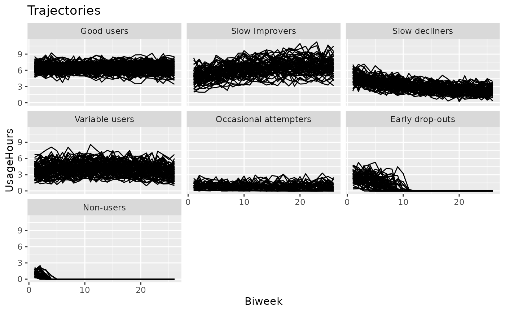

A simulated longitudinal dataset comprising 500 patients with obstructive sleep apnea (OSA) during their first year on CPAP therapy. The dataset contains the patient usage hours, averaged over 2-week periods.
The daily usage data underlying the downsampled dataset was simulated based on 7 different adherence patterns. The defined adherence patterns were inspired by the adherence patterns identified by Aloia et al. (2008), with slight adjustments
The PAP.adh1y dataset is a subset of PAP.adh, comprising only patients who used therapy for at least 1 year.
The subset does not contain the Non-users and Early drop-out groups.
PAP.adh
PAP.adh1yA data.frame comprising longitudinal data of 500 patients, each having 26 observations over a period of 1 year.
Each row represents a patient observation interval (two weeks), with columns:
factor: The patient identifier, where each level represents a simulated patient.
integer: Two-week interval index. Starts from 1.
integer: The last day used for the aggregation of the respective interval, integer
numeric: The mean hours of usage in the respective week.
Greater than or equal to zero, and typically around 4-6 hours.
factor: The reference group (i.e., adherence pattern) from which this patient was generated.
An object of class data.frame with 9880 rows and 5 columns.
This dataset was generated based on the cluster-specific descriptive statistics table provided in Aloia et al. (2008), with some adjustments made in order to improve cluster separation for demonstration purposes.
Aloia MS, Goodwin MS, Velicer WF, Arnedt JT, Zimmerman M, Skrekas J, Harris S, Millman RP (2008). “Time series analysis of treatment adherence patterns in individuals with obstructive sleep apnea.” Annals of Behavioral Medicine, 36(1), 44--53. ISSN 0883-6612, doi:10.1007/s12160-008-9052-9 .
This dataset is only intended for demonstration purposes. While the data format will remain the same, the data content is subject to change in future versions.
data(PAP.adh)
if (require("ggplot2")) {
plotTrajectories(PAP.adh, id = "Patient", time = "Biweek", response = "UsageHours")
# plot according to cluster ground truth
plotTrajectories(
PAP.adh,
id = "Patient",
time = "Biweek",
response = "UsageHours",
cluster = "Group"
)
}
#> Loading required package: ggplot2
